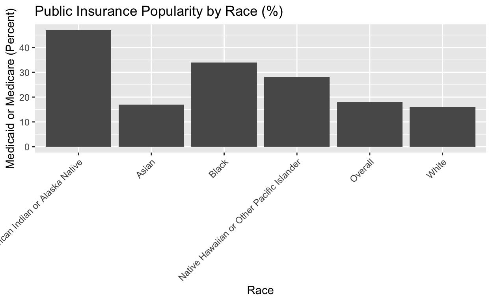

Introduction
Race is a complicated issue in the U.S., one that is influenced by a multitude of different factors. Systemic injustices that go back to before the founding of this country continue to influence daily life for people today. Injustices such as slavery, police brutality, Jim Crow laws, redlining, forced indigenous relocation, Japanese internment, colonialism in general and much, much more have a strong power that proves that these horrible acts and events are not simply in the past. In this analysis, a variety of factors will be analyzed to ascertain more specific ways that systemic disparities can be identified. Special focus is placed on cancer, as incidence and mortality of cancer is not uniformly distributed across all racial groups. The research question of interest here is how the mortality rate of cancer differs across racial groups. As a hypothesis, it is expected that mortality rates will be higher among those that are nonwhite. A correlation between race and income groups, with nonwhite people having a higher proportion of individuals receiving lower levels of income (to be specified later) as compared to white people, is also expected. Those with lower incomes likely have received less education and have reduced access to quality healthcare and therefore may not receive the treatment they need. In this analysis, we will analyze how race relates directly to mortality rates. We will also observe how race correlates with other factors that may more directly influence mortality rates, such as levels of income and education, proportions of uninsured people, and rates of late-stage diagnosis (Stage III or IV). All of these factors are also firmly tied to the history of racism in this country. The information being studied here is important because, upon discerning how mortality rates, and therefore healthcare disparities, are distributed across demographic groups, governments and organizations can more effectively create initiatives to correct these disparities by providing essential healthcare services to those who need it.
Data
The following data comes from the paper “Racial Disparities in Cancer Stage at Diagnosis and Survival for Adolescents and Young Adults” by Taparra, Kekumano, et al., published in the National Library of Medicine (https://pmc.ncbi.nlm.nih.gov/articles/PMC11365006/) on August 30, 2024. The research question in this study aligns well with the goals of this analysis, as the researchers wanted to understand any relationship between race and two variables: 1) cancer stage at diagnosis and 2) mortality rate. Because of this, the data is very useful in answering the research question being posed here. The data was collected retrospectively with the goal of creating a statistical analysis, covering those who received a diagnosis between January 1, 2004 and December 31, 2017.
Loading the datasets and packages:
finaldata_short <- finaldata |>
select("Race", "Deceased", "Stage I", "Stage II", "Stage III")
knitr::kable(finaldata_short)| Race | Deceased | Stage I | Stage II | Stage III |
|---|---|---|---|---|
| Total | 47613 | 117309 | 72503 | 48229 |
| White | 35995 | 101820 | 57335 | 38177 |
| American Indian or Alaska Native | 298 | 497 | 361 | 292 |
| Asian | 1319 | 2920 | 2505 | 1363 |
| Black | 9785 | 11787 | 12008 | 8213 |
| Native Hawaiian or Other Pacific Islander | 216 | 285 | 294 | 184 |
finaldataperc_short <- finaldataperc |>
select("Race", "Deceased", "Stage I", "Stage II", "Stage III")
knitr::kable(finaldataperc_short)| Race | Deceased | Stage I | Stage II | Stage III |
|---|---|---|---|---|
| Overall | 16 | 40 | 25 | 17 |
| White | 15 | 42 | 24 | 16 |
| American Indian or Alaska Native | 20 | 34 | 25 | 20 |
| Asian | 16 | 35 | 30 | 16 |
| Black | 24 | 29 | 29 | 20 |
| Native Hawaiian or Other Pacific Islander | 22 | 29 | 30 | 19 |
The study looks at five different races: 1) American Indian/Alaska Native, 2) Asian, 3) Black, 4) Native Hawaiian or Other Pacific Islander, and 5) White. There is also a sixth row to show the value of the variable across the entire population sample (Total).
A total of 291,899 individuals are included in the study. Of these, 1,457 are American Indian/Alaska Native, 8,412 are Asian, 40,851 are Black, 987 are Native Hawaiian or Other Pacific Islander, and 240,192 are White.
When looking at this study, there are two data sets to consider: the one labeled “finaldata” (finaldata4.csv), which contains the absolute numbers of peope who fit into each category in the study. There is also “finaldataperc” (finaldataperc.csv), which contains this same data in percentages. For the purposes of this analysis, finaldataperc will be the data set that is primarily used, for the following reason:
finaldata |>
ggplot(aes(x = Race, y = `Medicaid or Medicare`)) +
geom_bar(stat = "identity") +
theme(axis.text.x = element_text(angle = 45, hjust = 1))
The massive disparities here can partially be attributed to the fact that the vast majority of people sampled were white; therefore, it is informative to compare percentages instead of absolute number:
finaldataperc |>
ggplot(aes(x = Race, y = `Medicaid or Medicare`)) +
geom_bar(stat = "identity") +
theme(axis.text.x = element_text(angle = 45, hjust = 1))It is notable that the percentages do not refer to the percentage of the category, but percentage of the race; for example, the variable “Uninsured” does not contain 6% White, 9% Black, etc. Rather, it means that within the insurance sub-category (that includes the variables “Private insurance”, “Medicaid or Medicare”, and “Uninsured”), 76% of White people have private insurance, 18% are on Medicaid or Medicare, and 6% are uninsured.
The sub-categories are:
- Deceased
- Cancer stage (“Stage I”, “Stage II”, “Stage III”, “Stage IV”, “NA (CNS)”)
- Type of cancer (“Breast”, “Cervical”, “CNS”, “Colon or rectal”, “Lung”, “Lymphoma”, “Melanoma”, “Ovarian”, “Sarcoma”, “Testicular”)
- Gender (“Female”, “Male”)
- Distance to hospital, km (this is not a percentage)
- Income (“Higher income”, “Lower income”)
- Urban/rural (“Metropolitan”, “Urban-rural”)
- Education (“More education”, “Less education”)
- Insurance (“Private insurance”, “Medicaid or Medicare”, “Uninsured”)
- Treatment received (“Surgery”, “Chemotherapy”, “Radiotherapy”)
For this analysis, we are not using the “Type of cancer”, “Gender”, “Distance to hospital”, “Urban/rural”, or “Treatment received” categories.
The dependent variables here are “Deceased” , education (2 columns), income (2 columns), insurance (3 columns), and cancer stage (5 columns). The Deceased variable refers to those who both received a diagnosis and passed away due to cancer within the study period (2004-2017). In the education variable, an individual is classified as having “More education” if their level of education (high school, college, etc.) is greater than the median level of education in their county. In the income variable, an individual classifies as having “Higher income” when their annual income is greater than the median household income in their county and “Lower income” otherwise. Cancer stage, of course, refers to the stage at diagnosis, with the exception of central nervous system (CNS) cancer, which is not classified in the traditional stages.
The independent variable is race. We are looking to see how race influences the other variables.
Below is a graph summarizing one of the relationship between race and mortality, one of the key questions of this analysis:
The graph above demonstrates the percentages of people included in the study within each race that died of cancer. Among those included in the study, 15% of white people died, 24% of Black people died, 20% of American Indians or Alaska Natives died, 16% of Asian people died, and 22% of Native Hawaiians or other Pacific Islanders died. Across all races, 16% of people who had cancer died from it. These numbers indicate that all races had a higher rate of death from cancer than the average of all people, with the exceptions of white people, who had a lower average, and Asian people, whose average equaled the total population. Since there is such a disparity between the death rates of white people and most other races, the data suggests that white people have a higher chance of surviving cancer across all cancer types.
Results
To get more types of models, we need to reshape the data.
finaldataperc1 <- finaldataperc |>
select("Race", "Deceased", "Stage I", "Stage II", "Stage III", "Stage IV", "NA (CNS)", "More education", "Less education", "Higher income", "Lower income", "Uninsured", "Private insurance", "Medicaid or Medicare")finaldataperc_long_income <- finaldataperc1 |>
pivot_longer(cols = c("Higher income", "Lower income"),
names_to = "Income Category",
values_to = "Income Value")long_income_abbr <- finaldataperc_long_income |>
select("Race", "Income Category", "Income Value")
knitr::kable(long_income_abbr)| Race | Income Category | Income Value |
|---|---|---|
| Overall | Higher income | 63 |
| Overall | Lower income | 37 |
| White | Higher income | 66 |
| White | Lower income | 34 |
| American Indian or Alaska Native | Higher income | 41 |
| American Indian or Alaska Native | Lower income | 59 |
| Asian | Higher income | 79 |
| Asian | Lower income | 21 |
| Black | Higher income | 40 |
| Black | Lower income | 60 |
| Native Hawaiian or Other Pacific Islander | Higher income | 75 |
| Native Hawaiian or Other Pacific Islander | Lower income | 25 |
Now, here is a visualization of the relationship between income category and race:
perc_income <- finaldataperc_long_income |>
select("Race", "Income Category", "Income Value")The data shows that, compared to the overall population, which will be treated as the “average”, the Asian, Native Hawaiian, and white groups have higher proportions of “Higher income” people and lower proportions of “Lower income” people. This is reversed in the American Indian and Black groups, which have lower proportions of “Higher income” people and higher proportions of “Lower income” people.
Here is a visualization of the relationship between education level and race:
finaldataperc_long_education <- finaldataperc1 |>
pivot_longer(cols = c("More education", "Less education"),
names_to = "Education Category",
values_to = "Education Value")perc_education <- finaldataperc_long_education |>
select("Race", "Education Category", "Education Value")ggplot(perc_education, aes(x = Race, y = `Education Value`, fill = `Education Category`)) +
geom_bar(stat = "identity", position = "dodge") +
labs(title = "Education Distribution by Race",
x = "Race",
y = "Percentage",
fill = "Education Level") +
theme(axis.text.x = element_text(angle = 45, hjust = 1))The above graph demonstrates that the white and Asian groups had higher proportions of people with “More education” than the overall population, as well as lower proportions of people with “Less education”. Meanwhile, the Native Hawaiian group had a roughly equal proportion of “More education” people and a slightly higher proportion of “Less education” people. Both the Black and American Indian groups had lower levels of “More education” people and higher levels of “Less education” people than the overall population.
Now, the relationship between insurance status and race:
finaldataperc_long_insurance <- finaldataperc1 |>
pivot_longer(cols = c("Uninsured", "Medicaid or Medicare", "Private insurance"),
names_to = "Insurance Category",
values_to = "Insurance Value")perc_insurance <- finaldataperc_long_insurance |>
select("Race", "Insurance Category", "Insurance Value")ggplot(perc_insurance, aes(x = Race, y = `Insurance Value`, fill = `Insurance Category`)) +
geom_bar(stat = "identity", position = "dodge") +
labs(title = "Insurance Distribution by Race",
x = "Race",
y = "Percentage",
fill = "Insurance Level") +
theme(axis.text.x = element_text(angle = 45, hjust = 1))The white and Asian groups had higher proportions of “Private insurance” than the Overall, and have lower levels of those on Medicaid or Medicare than the Overall, though the Asian proportion of this variable is very close to the Overall. The Black, Native Hawaiian, and American Indian groups all had lower levels of private insurance and higher levels of Medicaid or Medicare. The proportions of those uninsured are all very close to each other, but it is notably higher among the Black population.
Next, we will create a linear regression to determine how an predictor variable (cancer stage) influences the response variable (mortality rate). It is important to establish and verify this relationship, as it is relevant in a later analysis of how race correlates with these variables.
mortality_linear <- lm(Deceased ~ `Stage I` + `Stage II` + `Stage III`, data = finaldataperc)
mortality_linear
Call:
lm(formula = Deceased ~ `Stage I` + `Stage II` + `Stage III`,
data = finaldataperc)
Coefficients:
(Intercept) `Stage I` `Stage II` `Stage III`
63.9137 -0.8539 -0.6332 0.1036 summary(mortality_linear)$r.squared[1] 0.9507916The regression demonstrates that:
The intercept is 63.91.
The Stage I coefficient is -0.85.
The Stage II coefficient is -0.63.
The Stage III coefficient is 0.1.
In context, this means that, if every individual who was diagnosed with cancer was diagnosed at Stage IV (if they were afflicted with central nervous system cancer, this does not apply), the mortality rate would be approximately 63.91%. The coefficients refer to the percent change in the mortality rate for every 1% increase in the population of people who were diagnosed during the corresponding stage. For every 1% increase in the amount of people who were diagnosed during Stage I, the mortality rate falls by 0.85%. For a similar increase in the Stage II population, the mortality rate falls by 0.63%. For the same increase in the Stage III population, the mortality rate rises by 0.1%. The R-squared, calculated above to be approximately 0.95, reflects a very small degree of variation between the values predicted by the coefficients and the true values, according to the data set, indicating that the above regression is a fairly accurate depiction of the relationship between cancer mortality rates and the stage of diagnosis. However, there are concerns regarding the standard error and p-values, which will be explored and qualified in the conclusion section.
Here is the relationship between race and stage of cancer at the time of diagnosis:
finaldataperc_long_stage <- finaldataperc1 |>
pivot_longer(cols = c("Stage I", "Stage II", "Stage III", "Stage IV"),
names_to = "Stage Category",
values_to = "Stage Value")perc_stage <- finaldataperc_long_stage |>
select("Race", "Stage Category", "Stage Value")ggplot(perc_stage, aes(x = Race, y = `Stage Value`, fill = `Stage Category`)) +
geom_bar(stat = "identity", position = "dodge") +
labs(title = "Stage Distribution by Race",
x = "Race",
y = "Percentage",
fill = "Stage Level") +
theme(axis.text.x = element_text(angle = 45, hjust = 1))
White people are the only group with a Stage I diagnosis proportion higher than the Overall. Native Hawaiian and Asian people are tied for the highest proportion of Stage II diagnoses, while Black and American Indian populations are tied for the highest Stage III proportions. Black people also have the largest level of those diagnosed at Stage IV. All of these extreme values are larger than their corresponding value in the Overall. It is also noteworthy that, while Stage I is typically the most common stage of diagnosis, Stage II is more common among Native Hawaiians/Other Pacific Islanders and it Stages I and II have equal proportions in the Black population.
Conclusion
The regression in the above section
The hypothesis, that nonwhite populations experience a higher mortality rate of cancer, is supported by the data. Related factors, such as income level, education level, type of insurance, and stage of cancer at diagnosis are all variables that remained consistent across the populations and provide some reasoning behind the hypothesis. The Black population in particular has consistently high proportions of people classified as “Lower income”, “Less education”, “Uninsured”, and “Stage IV”, all linked factors that clearly contribute to this population having the highest mortality rate of the five races included in this study. For example, an adult who is not a high school graduate is more likely to have a lower income due to higher-paying jobs often requiring higher education. This low income can lead to someone being on Medicaid or not having health insurance at all, simply because they cannot afford a more expensive, but higher quality, private health care plan. This leads to fewer regular visits to the doctor and an unwillingness to see a doctor even if noticeable complications do arise (due to the high cost), which can lead to an individual not receiving a diagnosis until the cancer has progressed to a late stage, limiting the available time and options to fight the condition.
However, the hypothesis was imprecise in that it predicated that white people would have the lowest mortality rate of cancer. The data in the study supports this, but not every nonwhite race has an equal mortality rate. For example, the Asian population had a very similar mortality rate to white people and many of the supporting factors are also similar: high incomes, high education levels, high rates of private insurance, and high proportions of Stage I diagnoses. It is unclear why exactly this is, but different races in the U.S. have faced different barriers to wealth and education throughout American history. It is also true that the Asian group only contained roughly 8,400 people, while the Black population contained about 41,000 people and the white population contained about 240,000 people. It is possible that differences from white people would get more pronounced when considering a larger population of Asian people, which is something that can be done in a future study. Alternatively, it is entirely possible that Asian people are simply very similar to white people in terms of wealth and education levels in the U.S. and an increased sample size would only further support the current findings.
Besides the Black population, the other population that had notably high proportions of mortality, low income, low education, late-stage diagnoses, and the use of government insurance or even lack of insurance are indigenous Americans. This is another group that has a long and storied history of tragedy and injustice over the past several hundred years, creating a society where they face roadblocks to education and wealth that most white people don’t face, leading to the results of this study, as shown above.
Moving forward, there are variables that were not included in this analysis that are worthy of study. A prime example is the type of region in which an individual lives, whether it is urban or rural. This variable is technically included in this data set, but it is not established in a way that lends itself to thorough analysis, so a new study that focuses specifically on this distinction would be welcome. Those who live in rural areas may have more difficulty reaching a doctor, which can have a powerful influence on late-stage diagnoses. Incidence of cancer should also be analyzed, since any disparities in incidence, not just mortality, of different types of cancers has the potential to be very interesting; even in a study like that, there would be uncertainty about the accuracy of reporting; some people with cancer may simply never get diagnosed, confounding the data. Further studies should also be done to more closely analyze the supporting variables from this data set: income, education, and type of insurance. These factors do indeed influence cancer mortality rate but there remains the closer question of what factors influence them. Above, at the end of the first paragraph of the conclusion section, a conjecture was made that connects all of these variables, but hard data would be more appropriate for further study. Income inequality is something that impacts all races, though unequally, and the causes behind these, whether they are related to location, career, or something else, is useful data that can help further determine the groups of people most in need of healthcare aid.